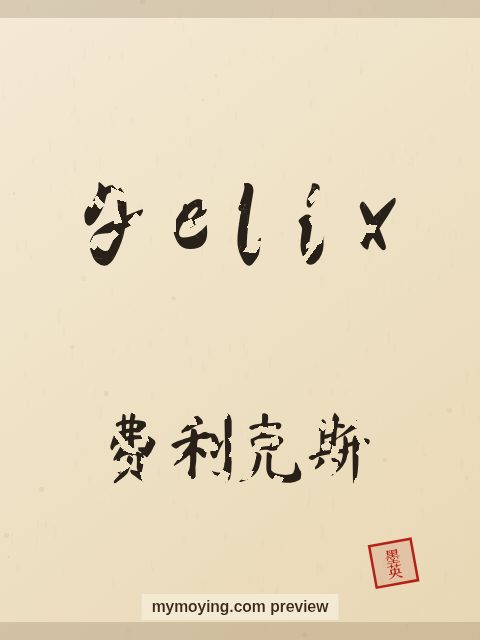

Felix in Chinese Calligraphy
A look at Felix in brush style, with the Chinese transliteration 费利克斯 (Fèi lì kè sī) and the meaning of the name.

Sample. “Felix” in the Regular (楷书) brush style with the Chinese name 费利克斯 (Fèi lì kè sī). The paid file removes the watermark.
The Chinese characters for Felix
As a transliteration, Felix is usually written 费利克斯 (Fèi lì kè sī). Each character is listed below with its own dictionary meaning — the name is chosen by sound, not by meaning, and Moying does not translate names. Please have a person review the characters before any permanent use such as a tattoo.
Origin and meaning
From Latin, Felix carries the meaning “happy, fortunate”.
About the name Felix
A cheerful Latin name meaning 'happy', and a favourite in ancient Rome.
As a gift or a tattoo
Because it means “happy, fortunate”, a Felix calligraphy print makes a thoughtful gift for someone who loves the name or its meaning.
Open Felix in the generatorFree watermarked preview. $1.99 once for a clean high-resolution download of this name in every style and setting. No subscription. Digital product, delivered instantly; see Terms.